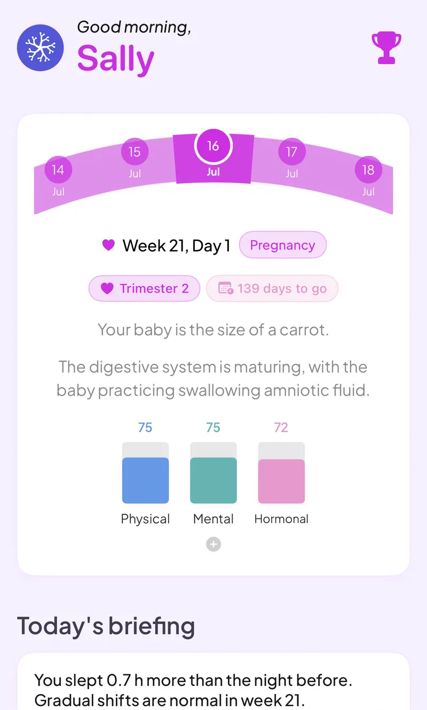

Pregnancy mode that keeps your sleep, mood and symptoms connected week by week
Switch on pregnancy mode and Veya follows your pregnancy week by week from your due date. Your symptoms, sleep, mood and nutrition stay on the same timeline, so you can see how they move together as the weeks go on.
Download VeyaNot on iPhone? Try it in the browser on any device.

On a computer?
Scan to download on your phone.

Built for pregnancy tracking
Week-by-week view
See your pregnancy week and trimester, with baby size information, counted from your due date.
Symptom logging
Log pregnancy symptoms day by day and see them next to your sleep and mood, so you can spot what changes together.
Kick counter and contraction timer
Tap to count kicks in a session, and time contractions with duration and intervals recorded for you.
Weight tracker
Log your weight as the weeks go on and see it charted against the week.
Sleep and mood
Sleep and heart rate variability come in from your wearable, and you can log mood daily. On iPhone, Apple Watch, Oura, WHOOP and Garmin data arrives through Apple Health. In the web app, Oura and Withings connect directly.
Nutrition
Log meals and macros in the same app instead of a separate food tracker.
What happens to your cycle tracking
While pregnancy mode is on, the cycle page shows your pregnancy week instead of a cycle day. Your earlier cycle and trying-to-conceive history stays in your record, and it is there if you track a cycle again later. Use the due date calculator if you want an estimate before you start.
See how it all connects
Pregnancy changes your sleep, mood and energy, and most apps keep each one in a separate corner. Veya puts your symptoms, mood, nutrition and wearable sleep next to each other on one timeline, week by week, and shows where they line up, like a restless week of sleep and a rougher stretch of mood. If you used Veya while trying to conceive, that history is already there when you start pregnancy mode.
What you can log
Private by default
Pregnancy tracking means logging sensitive details. Veya has no ads and does not sell your data, and you can export or delete what you have logged at any time.
Frequently asked questions
Comparing apps? See our pregnancy app comparison, or find out why two apps can show a different week.
Follow your pregnancy week by week
Add your due date, then log symptoms, sleep and mood as the weeks go on.
Download VeyaNot on iPhone? Try it in the browser on any device.
Tracking for other conditions
Fertility tracking · IVF tracking · PCOS tracking · Perimenopause tracking · Cycle syncing · All conditions